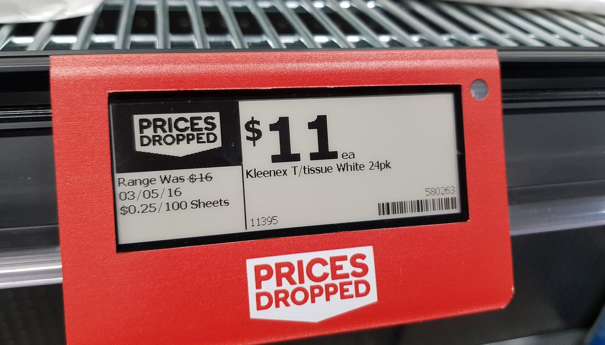
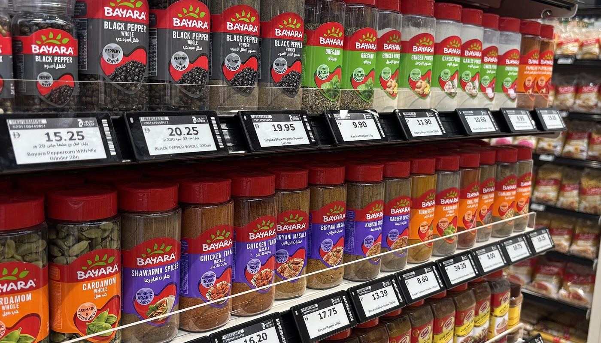

Domotique · aucun lien affilié sur cette page · sources relevées le 2 oct. 2026
Étiquettes de prix e-ink : leur redonner vie avec une carte à 20 €, et ce qu'il faut vérifier avant d'acheter

Les étiquettes de prix électroniques finissent par milliers dans les cartons quand un magasin change de système. Un projet libre, OpenEPaperLink, remplace leur firmware d'origine pour en faire des afficheurs sans fil à batterie, pilotés depuis Home Assistant. La promesse est réelle, le chemin est plus étroit qu'il n'y paraît : toutes les étiquettes ne sont pas compatibles, la licence du projet interdit l'usage commercial, et il faut un point d'accès — pas seulement l'étiquette.
Aucun lien affilié sur cette page — voir comment ça marche Projet OpenEPaperLink, firmware 2.70
En bref
- Le projet est vivant, pas un dépôt abandonné. 1 847 étoiles sur GitHub, 185 forks, dernière poussée de code le 20 septembre 2026 ; l'intégration Home Assistant en compte 329.
- La licence change tout. Le firmware est publié en CC BY-NC-SA 4.0, clause NonCommercial comprise — le site officiel parle d'un usage « uniquement non commercial ». Montage personnel : oui. Revente d'un kit : non.
- Il faut une carte, pas juste l'étiquette. Points d'accès chiffrés par le projet lui-même : ~10-20 € en bricolage, ~40 € en intermédiaire, ~60 € pour la carte prête à l'emploi.
- Aucune grille de prix publique pour les étiquettes. Elles se vendent par lots sur des places de marché d'import ; les seuls prix publics datés que nous ayons retrouvés datent de décembre 2024 et sont affichés plus bas, avec leur date.
- Le vrai risque n'est pas le prix, c'est la compatibilité. Une étiquette absente de la liste du wiki n'est pas « sûrement compatible » — elle est non vérifiée.
De quoi on parle exactement
Une étiquette de prix électronique, c'est le petit écran d'encre électronique fixé au bord des rayons pour remplacer les étiquettes papier. Elle contient une radio, une batterie qui tient des années, et un firmware fermé écrit par son fabricant.
OpenEPaperLink remplace ce firmware par un autre, ouvert, avec un protocole documenté. L'étiquette devient alors un afficheur sans fil que vous contrôlez : texte, icônes, QR codes, graphiques issus de vos propres capteurs.
Trois choses valent la peine d'être dites tout de suite, parce qu'elles décident si ce projet est fait pour vous.
- C'est un projet de bricoleur, pas un produit. Il faut flasher l'étiquette avec un outil dédié, parfois en soudant sur une carte minuscule.
- Il n'y a aucune garantie, et les auteurs le disent eux-mêmes — la citation est plus bas, elle est sans ambiguïté.
- L'usage commercial est exclu par la licence. C'est précisément pour cette raison que nous n'imaginons pas de kit à vendre ici, et que cette page est un guide, pas une boutique.
Les prix : ce qui est chiffré, et ce qui ne l'est pas
Le projet publie une grille indicative pour les points d'accès — pas pour les étiquettes, qui ne sont pas vendues par le projet. Voici les deux tableaux, séparés, parce qu'ils n'ont pas la même solidité.
Barres proportionnelles aux prix normaux lus, base à zéro. Ces montants ne viennent pas du fabricant et ne sont pas une grille : ils ont été relevés le 6 décembre 2024 par un membre du forum Home Assistant, en Espagne, sur la boutique du vendeur d'étiquettes sur une place de marché d'import. Nous les publions avec leur date parce qu'ils sont les seuls chiffres vérifiables que nous ayons trouvés — pas parce qu'ils sont ceux d'aujourd'hui. Un cinquième format, 10,2 pouces, était affiché à 311,27 € (192,99 € en promotion) : hors barres, l'échelle écraserait les autres.
| Étiquette (e-ink, noir/rouge/blanc) | Prix normal affiché | Prix en promotion |
|---|---|---|
| 2,1 pouces | 22,40 € | 13,99 € |
| 2,9 pouces | 26,76 € | 16,59 € |
| 4,2 pouces | 60,63 € | 37,59 € |
| 7,5 pouces | 144,76 € | 90,99 € |
| 10,2 pouces | 311,27 € | 192,99 € |
Relevé du 6 décembre 2024, boutique d'un vendeur d'étiquettes sur une place de marché d'import, consultation depuis l'Espagne, rapporté publiquement sur le forum Home Assistant. Hors port et hors TVA. Nous n'avons pas pu vérifier de prix 2026 : les pages de vente de ces lots ne sont pas consultables sans compte, donc nous ne les citons pas.
Le second tableau est plus solide, parce qu'il est publié par le projet lui-même. Ce sont les fourchettes indicatives de ses points d'accès.
| Point d'accès | Fourchette indiquée par le projet | Ce que ça demande |
|---|---|---|
| Spaghetti AP | ~10-20 € | montage à partir de composants standards |
| Yellow AP | ~10-20 € | circuit compact, écran TFT intégré, montage plus délicat |
| BLE Only AP | ~10-20 € | une carte ESP32-S3 du commerce — mais étiquettes Bluetooth uniquement |
| 4inch AP | ~40 € | bâti autour d'un module d'écran 4 pouces |
| LilyGo T-Panel S3 | ~60 € | produit du commerce, prêt à l'emploi, écran 4 pouces |
| Mini AP v4 (par Nic) | non publié | écran TFT et flasheur d'étiquettes intégrés |
Source : page « Access Points » du site officiel du projet, lue le 2 octobre 2026, qui publie un barème d'effort (€ = ~10-20 €, €€ = ~40 €, €€€ = ~60 €). Les fourchettes sont celles du projet, pas un prix de vente ; elles dépendent des composants et du pays.
Le point qui décide : la compatibilité de votre étiquette
C'est ici que se perdent les achats. Une étiquette n'est pas « une étiquette » : derrière l'écran il y a une famille de puces, et le firmware à flasher dépend de cette famille. Le wiki du projet publie la liste des modèles vérifiés.

| Famille de puce | Exemples de modèles vérifiés | Radio |
|---|---|---|
| ZBS (M2) | 1,54″ ST-GR16000 · 2,7″ ST-GR27000 · 2,9″ ST-GR29000 · 4,2″ ST-GR42 · afficheurs à segments Solum SLT-EM007 (UK), SLT-EM104 et SLT-ES104 (DE) | 802.15.4 |
| nRF (M3) | 1,3″ EL013H2WRD (crochet) · 2,2″ EL022H3WRA · 2,9″ EL029H3WRA | 802.15.4 |
| SiLabs EFR32xG22 (M3) | 1,6″ · 2,2″ · 2,6″ Newton Pro · 2,9″ (dont version congélateur) · 4,2″ · 4,3″ · 7,5″ · 11,6″ | 802.15.4 |
| CC1110 / CC1310 | 2,9″ EL029D2WRA · gamme Chroma 2,1″ / 2,9″ / 4,2″ / 7,4″ | SubGHz 868/915 MHz |
| Autres | 2,9″ EL029GSWRN · 2,9″ Opticon BWRY EE-293RY · 4,2″ TG-GR42 · 7,4″ ST-GM7500N · 7,5″ ST-GR750BN · 13,3″ EL133C2WRN | selon le modèle |
Deux conséquences pratiques. D'abord, la radio doit correspondre au point d'accès : une étiquette SubGHz ne parle pas à un point d'accès qui ne fait que le 802.15.4. Ensuite, une étiquette absente de ces listes n'est pas forcément incompatible — mais personne ne l'a vérifiée à votre place, et le wiki prévient lui-même que ses informations sont déduites, parfois fausses.
Un cas particulier mérite d'être connu : certaines étiquettes Bluetooth ne passent pas par le point d'accès du tout. Elles se pilotent directement depuis Home Assistant via un adaptateur Bluetooth, avec un autre firmware. Le fabricant concerné, interrogé par un utilisateur, a répondu que ses étiquettes ne « supportaient pas » ce type d'usage — ce qui n'a pas empêché la communauté de le faire fonctionner, mais dit le niveau d'accompagnement attendu.
Choisir sa carte sans se tromper
Le piège le plus coûteux n'est pas la compatibilité de l'étiquette, c'est la vôtre. Le projet a publié une note qui invalide une grande partie des cartes achetées un peu vite.
Autrement dit : achetez une carte ESP32-S3 avec 16 Mo de flash et 8 Mo de RAM (la référence dite « N16R8 »), et pas la carte la moins chère du tiroir. Les cartes ESP32-S2 ne sont plus prises en charge du tout.
Trois cas, une carte chacun
Ce que les présentations oublient de dire
- La licence interdit l'usage commercial. Le projet est en Creative Commons BY-NC-SA 4.0 et son site écrit que l'usage est « uniquement non commercial ». Personne ne vous vendra de kit sous cette licence — et si quelqu'un le fait, la question de sa conformité se pose.
- Il faut flasher l'étiquette, physiquement. Cela suppose un outil de programmation dédié et, souvent, un support de contact. Le wiki parle de cartes « minuscules et fragiles » : « une goutte de colle chaude suffit à les déformer sérieusement » et à endommager les composants soudés.
- Il n'y a aucune garantie, à aucun niveau. Le projet l'écrit noir sur blanc et nous préférons le citer tel quel plutôt que de le reformuler.
- La batterie n'est pas annoncée pour vous. La consommation d'une étiquette dépend de sa fréquence de contact avec le point d'accès, donc de votre configuration. Nous n'avons pas mesuré d'autonomie et n'en publions aucune.
- Le projet est en cours de changement de nom côté Home Assistant. L'intégration est renommée et les étiquettes Bluetooth d'une marque précise n'y sont plus prises en charge. Lisez le dépôt de l'intégration avant d'acheter si vous partez d'un parc existant.
- Le port et la TVA ne sont pas publiés sur les places de marché d'import où ces étiquettes se vendent. Toute comparaison de prix avec une étiquette achetée en Europe doit en tenir compte.
Un dernier mot sur la demande, parce qu'elle est réelle mais datée. Le seul verbatim public que nous ayons retrouvé sur les prix de ces étiquettes est une phrase de 2024, sur le forum Home Assistant.
La mise en route, en trois étapes
Ce qu'on y affiche ensuite relève de vous : relevé de température d'une pièce, prochaine poubelle, calendrier, consommation électrique, prix d'un produit dans une boutique. L'affichage se construit à partir de vos capteurs, pas d'un service tiers.
La checklist avant de commander
- Vérifier le modèle exact de l'étiquette dans la liste du wiki du projet — famille de puce comprise, pas seulement la taille de l'écran.
- Vérifier la radio dont vous avez besoin : 802.15.4, Bluetooth, ou SubGHz 868 MHz. Elle détermine le point d'accès.
- Acheter un ESP32-S3 N16R8 (16 Mo de flash, 8 Mo de RAM). Une carte ESP32-S2 ne fonctionnera plus avec les versions actuelles.
- Prévoir le matériel de flashage en même temps que l'étiquette : sans lui, l'étiquette reste inutilisable.
- Accepter que l'étiquette peut être perdue. Le projet décrit des cartes fragiles et donne lui-même zéro garantie. N'engagez pas un lot coûteux au premier essai.
- Relire la licence si l'usage envisagé n'est pas strictement personnel : la clause non commerciale est explicite.
- Comparer au prix total, port et TVA compris, avant de conclure qu'acheter à l'import est moins cher qu'un afficheur du commerce.
Par où commencer, concrètement
Ces liens sont ceux du projet et de ses listes officielles. Aucun n'est un lien affilié.
- Installer le firmware sur votre carte → la page d'installation officielle du projet.
- Choisir votre point d'accès → les options de points d'accès, avec le barème d'effort.
- Vérifier qu'une étiquette est compatible → le wiki et sa liste de modèles vérifiés.
- Piloter depuis Home Assistant → le dépôt de l'intégration.
Notre recommandation, si vous partez de zéro : commencez par une étiquette d'occasion ou d'entrée de gamme et une carte ESP32-S3 N16R8, validez la chaîne complète, et seulement ensuite achetez un lot. C'est la seule façon de ne pas transformer un projet de week-end en carton de matériel incompatible.
Questions
Toutes les étiquettes de prix électroniques sont-elles compatibles ?
Non. Le wiki classe les modèles vérifiés par famille de puce : ZBS (M2), nRF (M3), SiLabs EFR32xG22 (M3), et CC1110/CC1310 en SubGHz. Une étiquette absente de ces listes n'est pas forcément incompatible, mais elle n'est pas vérifiée — et le wiki prévient lui-même que ses informations sont déduites et parfois fausses.
Quel point d'accès acheter, et à quel prix ?
Le projet chiffre trois niveaux : environ 10-20 €, environ 40 €, environ 60 €, du bricolage à la carte prête à l'emploi. Achetez une carte ESP32-S3 avec 16 Mo de flash et 8 Mo de RAM : la version 2.75 est la dernière à accepter les cartes ESP32-S2 ou les ESP32-S3 moins dotées.
Peut-on revendre un kit équipé de ce firmware ?
Non. La licence est Creative Commons BY-NC-SA 4.0, clause NonCommercial comprise, et le site du projet écrit que l'usage est « uniquement non commercial ». Le montage personnel est permis ; la revente d'un produit embarquant ce firmware ne l'est pas.
Combien coûte une étiquette ?
Il n'existe pas de grille publique. Le seul relevé public daté que nous ayons retrouvé vient d'un membre du forum Home Assistant, en Espagne, le 6 décembre 2024 : 22,40 € (13,99 € en promotion) pour du 2,1 pouces, 26,76 € pour du 2,9 pouces, 60,63 € pour du 4,2 pouces, 144,76 € pour du 7,5 pouces, 311,27 € pour du 10,2 pouces — hors port et hors TVA.
Faut-il Home Assistant ?
Non, mais c'est le chemin le plus documenté. Le projet fournit son propre point d'accès et une interface web ; l'intégration Home Assistant ajoute les capteurs (température, batterie, signal), les déclencheurs de bouton et le service de dessin. Ce sont deux usages du même matériel.
Cette page contient-elle des liens affiliés ?
Non. Aucun lien de cette page ne nous rapporte de commission à la date du 2 octobre 2026. Le programme d'affiliation AliExpress est enregistré comme candidat dans nos registres — aucun compte n'est créé, aucun lien n'est posé. La page À propos sera mise à jour le jour où cela changera.
Comment cette page est faite
- Aucun lien affilié ici. Le dépositaire naturel de ce type de page serait un programme de place de marché, puisque les étiquettes viennent d'import. Le nôtre est enregistré comme candidat, pas approuvé : donc aucun lien, et nous préférons l'écrire plutôt que de l'espérer.
- Les fourchettes de points d'accès viennent du projet. Les trois niveaux (~10-20 €, ~40 €, ~60 €) sont lus sur la page « Access Points » du site officiel, le 2 octobre 2026, avec la dépense d'assemblage associée.
- Les prix d'étiquettes sont datés et attribués. Ils proviennent d'un relevé public de décembre 2024 sur une place de marché d'import, consulté depuis l'Espagne, et nous ne les présentons pas comme les prix d'aujourd'hui. Aucun prix 2026 n'a pu être vérifié : les pages de vente de ces lots ne sont pas consultables sans compte, et nous ne les inventons pas.
- Les contraintes viennent du dépôt, du wiki et de la page officielle, pas d'articles de seconde main : licence, note de version sur les cartes, avertissement d'absence de garantie, fragilité des cartes.
- Les verbatims sont publics et attribués (forum Home Assistant, novembre et décembre 2024), reproduits avec leur date et traduits par nous.
- Aucune autonomie annoncée. Nous ne publions aucune durée de batterie : elle dépend de la configuration et nous ne l'avons pas mesurée.
- Les images sont des banques libres, encadrées, créditées et liées dans les sources. Les étiquettes photographiées ne sont pas des modèles que nous avons testés.
Sources
- Dépôt public OpenEPaperLink (README et licence) — lu le 2 octobre 2026 : description du projet, objectifs de consommation (~9 µA, latence de 40 s) et de débit (~5 ko/s), blocs de 4096 octets, avertissement d'absence de garantie, licence Creative Commons BY-NC-SA 4.0.
- Wiki du projet (page d'accueil) — lu le 2 octobre 2026 : liste des modèles d'étiquettes vérifiés par famille de puce (ZBS/M2, nRF/M3, SiLabs EFR32xG22, CC1110/CC1310 SubGHz), avertissement sur la fiabilité des informations, note de version 2.75 sur les points d'accès, protocoles radio pris en charge.
- Site officiel du projet, page « Access Points » — lue le 2 octobre 2026 : liste des points d'accès, barème d'effort et de prix (€ ~10-20 €, €€ ~40 €, €€€ ~60 €), exigence de 16 Mo de flash et 8 Mo de RAM.
- Site officiel du projet, page d'accueil — lue le 2 octobre 2026 : version 2.70 du firmware, mention de licence non commerciale, principes techniques (blocs de 4 Ko, 42 paquets par bloc, vérification par MD5, stockage EEPROM).
- Intégration Home Assistant du projet — dépôt et README lus le 2 octobre 2026 : prérequis matériels selon le mode (point d'accès ou Bluetooth), firmware à flasher pour les étiquettes Bluetooth, service de dessin de contenu, changement de nom de l'intégration, sort des étiquettes d'une marque précise.
- Forum Home Assistant, fil public sur les étiquettes e-ink en Bluetooth — lu le 2 octobre 2026 : relevé de prix daté du 6 décembre 2024 (2,1″ 22,40 € / 13,99 € ; 2,9″ 26,76 € / 16,59 € ; 4,2″ 60,63 € / 37,59 € ; 7,5″ 144,76 € / 90,99 € ; 10,2″ 311,27 € / 192,99 €), verbatim du 27 novembre 2024 sur la barre des 25 €, réponse du service client du fabricant d'étiquettes Bluetooth.
- Programme d'affiliation AliExpress (Portals) — statut dans nos registres au 2 octobre 2026 : candidat, aucun compte créé, aucun lien posé. Barème public : commission par catégorie, le matériel électronique étant situé par les comparateurs de programmes dans la fourchette basse.
- Crédits images (banque libre) : étiquette de prix e-ink dans un supermarché — Maksym Kozlenko, CC BY-SA 4.0 · rayon d'épices avec étiquettes électroniques — CC BY 4.0, via Wikimedia Commons.
- Guides liés : Tracker « Localiser » maison à partir d'un ESP32 · Cadre e-ink à oiseaux : la liste de courses réelle · Honest Switch — comparatif honnête
Avis clients
Avis sur ce guide, publiés après vérification. Chaque avis négatif reçoit une réponse publique — c'est comme ça qu'on s'améliore.
Les premiers avis seront publiés ici dès que de vrais lecteurs en enverront.